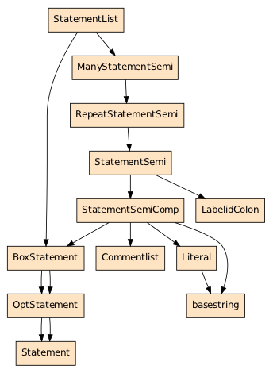

The Delphi grammar is based on the grammar written by Jorge L. Cangas, see the grammar listing. Jorge's grammar was tested extensively on millions of lines of code and extended as needed to obtain successful parses. However, taking into account that Delphi is a language with a long history and many major releases, it is to be expected that new cases will be found that the grammar does not cover. Since Delphi as a language has not been standardized, there is no way to formally verify the grammar.
The grammar is contained in the files:
delphi.grammardelphi_comment.grammarasm.grammarIn general, the grammar is verbose and very far from optimal. However, this is due to
limitations in the TXL parser.
A Python representation of the grammar is generated dynamically from the TXL
grammar
files, see delphisrc/ast.py. The names of the nonterminals become CamelCase
so program_file becomes ProgramFile. To get a list of all the nonterminals
execute the module:
$ python delphisrc/ast.py
AbsoluteInit: [Expr, Literal, basestring]
AccessorSpec: [AccessorVerbOnly, AccessorVerbId]
...
418 nodes
Each nonterminal is followed by a list of valid children, and this restriction
is enforced in actual parse trees, so trying to instantiate
AbsoluteInit(AbsoluteInit()) will be prevented:
Exception: Invalid nesting of AbsoluteInit -> AbsoluteInit
statement_listIn Delphi a block looks like this:
begin
WriteLn('First');
WriteLn('Second');
end
WriteLn('First') is a statement, and statements are sequenced with a
semicolon. However, when there is only one no semicolon is required:
begin
WriteLn('First')
end
But a statement can also include a comment and/or a label:
begin
{Set label} Top: WriteLn('First');
Goto Top;
end
Now let's look at how we can wire this together. The nonterminal
unlabeled_stm defines the last part of the statement, namely WriteLn('First').
It is here one of the basic building blocks of the nonterminal statement:
define statement
[commentlist] [opt labelid_colon] [unlabeled_stm]
end define
And now we want statement_list to be a list of statements, we would like
to tell the parser:
Expect a list of statement, with separator=';', where the last one need
not be followed by the separator.
Unfortunately, TXLs list operator only works on comma separated lists, so
instead we end up saying something like:
Expect a sequence of statement_semi, followed by an optional statement,
where a statement_semi is a choice between a label and a statement
followed by a semicolon.
Thus we have as the topmost nonterminal statement_list, with two possible
child nonterminals:
define statement_list
[many_statement_semi]
[box_statement][!]
end define
define many_statement_semi
[repeat statement_semi]
end define
define box_statement
[opt statement]
end define
box_statement is already fully explored, since it reaches statement.
Following statement_semi we see the choice mentioned before in the
description, between a label and a statement+semicolon:
define statement_semi
[statement_semi_comp]
| [labelid_colon]
end define
define statement_semi_comp
[box_statement][commentlist] ';
end define
We can visualize this chunk of the grammar by starting at StatementList
and going as far
as the nonterminal we are interested in, namely Statement by executing the
ast.py module with the -s option. The first argument is the nonterminal to
use as root, the rest are nonterminals to consider as leaves:
$ python delphisrc/ast.py -s StatementList Commentlist LabelidColon Statement
16 nodes

Now that we have the grammar, let's use it. We will parse this code:
begin
WriteLn('First');
WriteLn('Second');
WriteLn('Third')
end
We use the -t option to look at the parse tree. We are specifically
interested in the portion from StatementList down to Statement:
$ delphiparser.py Demo.dpr -t
StatementList(
ManyStatementSemi(
RepeatStatementSemi(
StatementSemi(
StatementSemiComp(
BoxStatement(
OptStatement(
Statement(...)
)
)
, Commentlist()
, ";"
)
)
, StatementSemi(
StatementSemiComp(
BoxStatement(
OptStatement(
Statement(...)
)
)
, Commentlist()
, ";"
)
)
)
)
, BoxStatement(
OptStatement(
Statement(...)
)
)
)
The result is pretty terrible if you consider that all we really want to do is
consider StatementList to be a list of Statements. Suppose we want to copy
the third Statement in between the first two, what do we have to do?
Statement in question.OptStatement, BoxStatement.ManyStatementSemi, RepeatStatementSemi and insert there.We are also faced with the problem that Statement and StatementSemi are
nonterminals of different types and cannot be used interchangeably.
There is not much we can do about the grammar, because the grammar is written in order that the parser may succeed. What we can do, however, is to transform the parse tree once we have it in Python.
By default, delphiparser.py applies a series of "listifying" transformations
which are necessary to apply before unparsing, because the unparser can be
much simpler when it only has a list to deal with.
In particular, we have the function listify_stmlist in
delphisrc/transformer.py.
When we apply this function we get:
StatementList(
StatementSemi(
StatementSemiComp(
BoxStatement(
OptStatement(
Statement(...)
)
)
, Commentlist()
, ";"
)
)
, StatementSemi(
StatementSemiComp(
BoxStatement(
OptStatement(
Statement(...)
)
)
, Commentlist()
, ";"
)
)
, Statement(...)
)
Here we still have to pay attention to the Statement/StatementSemi
distinction, but at least StatementList is an actual list that we can
insert/append/remove from at will.